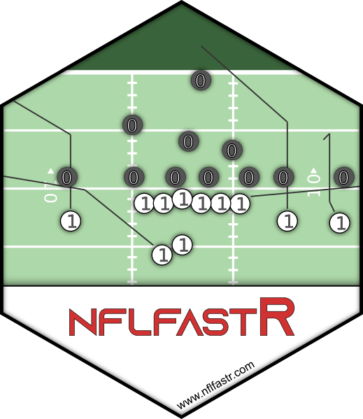

R/nflfastR-package.R
nflfastR-package.Rd
A set of functions to access National Football League play-by-play data from <https://www.nfl.com/>.
Prior to nflfastR v4.0, parallel processing could be activated with an
argument pp in the relevant functions and progress updates were always
shown. Both of these methods are bad practice and were therefore removed
in nflfastR v4.0
The next sections describe how to make nflfastR work in parallel processes and show progress updates if the user wants to.
Nearly all nflfastR functions support parallel processing
using furrr::future_map() if it is enabled by a call to future::plan()
prior to the function call.
Please see the documentation of the functions for detailed information.
As an example, the following code block will resolve all function calls in the current session using multiple sessions in the background and load play-by-play data for the 2018 through 2020 seasons or build them freshly for the 2018 and 2019 Super Bowls:
future::plan("multisession") load_pbp(2018:2020) build_nflfastR_pbp(c("2018_21_NE_LA", "2019_21_SF_KC"))
We recommend choosing a default parallel processing method and saving it as an environment variable in the R user profile to make sure all futures will be resolved with the chosen method by default. This can be done by following the below given steps.
First, run the following line and the file .Renviron should be opened automatically.
If you haven't saved any environment variables yet, this will be an empty file.
usethis::edit_r_environ()
In the opened file .Renviron add the next line, then save the file and restart your R session.
Please note that this example sets "multisession" as default. For most users
this should be the appropriate plan but please make sure it truly is.
R_FUTURE_PLAN="multisession"
After the session is freshly restarted please check if the above method worked
by running the next line. If the output is FALSE you successfully set up a
default non-sequential future::plan(). If the output is TRUE all functions
will behave like they were called with purrr::map() and NOT in multisession.
inherits(future::plan(), "sequential")
For more information on possible plans please see the future package Readme.
For more information on .Renviron please see
this RStudio article.
Most nflfastR functions are able to show progress updates
using progressr::progressor() if they are turned on before the function is
called. There are at least two basic ways to do this by either activating
progress updates globally (for the current session) with
progressr::handlers(global = TRUE)
or by piping the function call into progressr::with_progress():
load_pbp(2018:2020) %>% progressr::with_progress()
Just like in the previous section, it is possible to activate global progression handlers by default. This can be done by following the below given steps.
First, run the following line and the file .Rprofile should be opened automatically.
If you haven't saved any code yet, this will be an empty file.
usethis::edit_r_profile()
In the opened file .Rprofile add the next line, then save the file and restart your R
session. All code in this file will be executed when a new R session starts.
The part if (require("progressr")) makes sure this will only run if the
package progressr is installed to avoid crashing R sessions.
if (requireNamespace("progressr", quietly = TRUE)) progressr::handlers(global = TRUE)
After the session is freshly restarted please check if the above method worked
by running the next line. If the output is TRUE you successfully activated
global progression handlers for all sessions.
progressr::handlers(global = NA)
For more information how to work with progress handlers please see progressr::progressr.
For more information on .Rprofile please see
this RStudio article.
Useful links:
Maintainer: Ben Baldwin bbaldwin206@gmail.com
Authors:
Sebastian Carl mrcaseb@gmail.com
Other contributors:
Lee Sharpe [contributor]
Maksim Horowitz maksim.horowitz@gmail.com [contributor]
Ron Yurko ryurko@stat.cmu.edu [contributor]
Samuel Ventura samventura22@gmail.com [contributor]
Tan Ho [contributor]